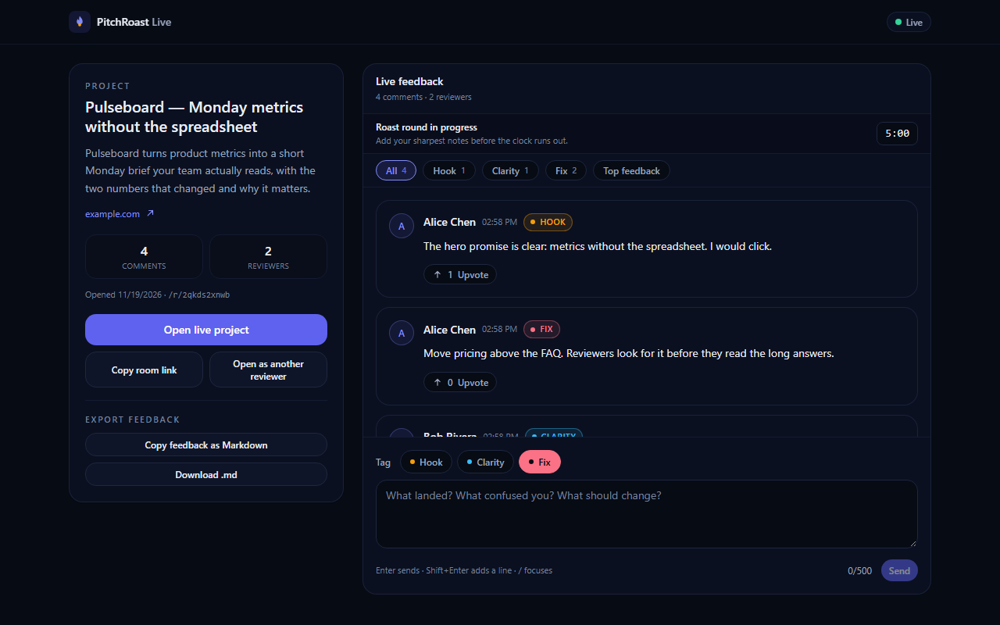
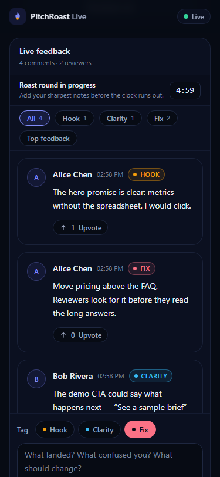
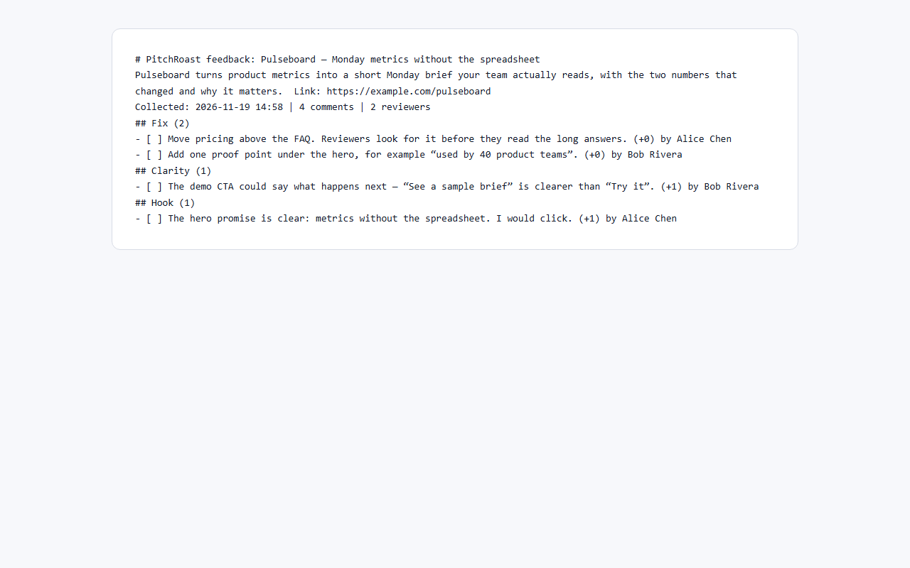
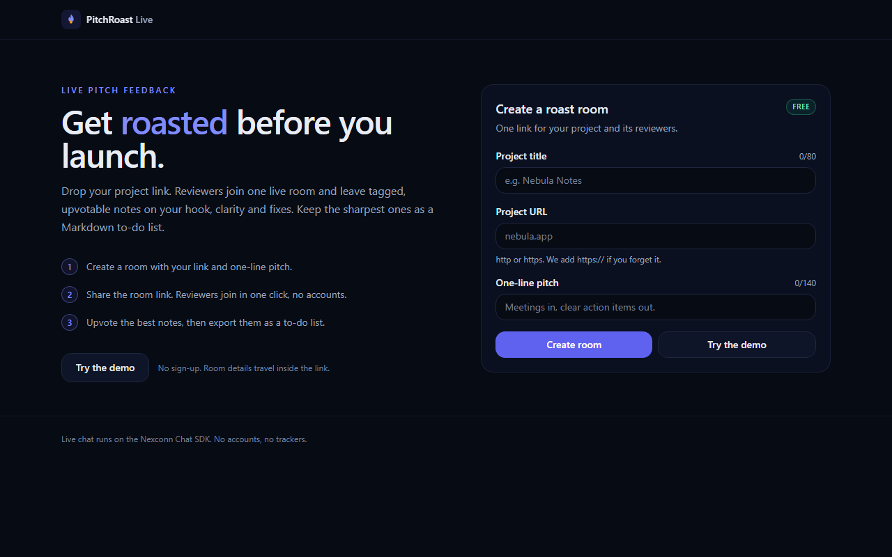
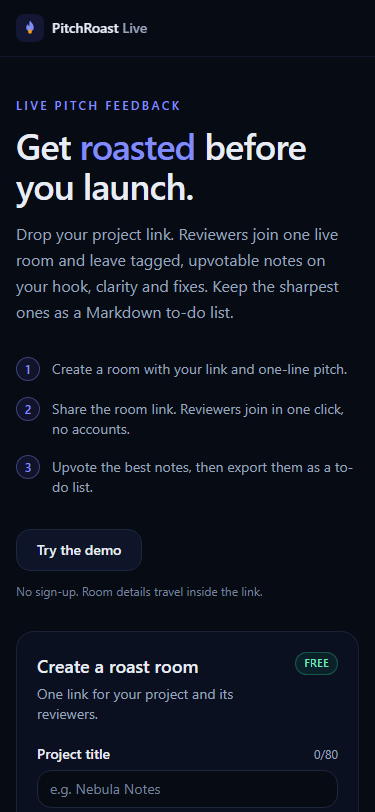

Nexconn Build Challenge 2026 · Open Innovation
PitchRoast Live
One link where reviewers leave tagged, upvotable notes on a pitch — and the builder leaves with a Markdown to-do list.
The problem
Builders share a project link in a group chat and get feedback scattered across replies, DMs and calls. The best notes get buried, the same point is repeated, and none of it turns into a to-do list. Reviewers also lack a shared vocabulary: one person critiques the hook, another rewrites the onboarding, and the builder has to sort it all out later.
PitchRoast Live puts the project and the review in one room. Every note carries a shared tag — Hook (is it catchy?), Clarity (is it easy to understand?) or Fix (what should change?). Reviewers upvote the sharpest points, and the owner exports the result as a Markdown checklist.
The solution
One-link rooms
The project title, URL and pitch travel inside the share link. No account, no database, no setup. The room ID and payload are validated before connecting.
Structured live feedback
Project card on one side, live chat on the other. Filter by tag, sort by votes, and see updates in every open room within a second or two.
Export that closes the loop
Copy or download a Markdown to-do list grouped by Fix, Clarity and Hook, with vote counts and authors.
Built for the messy path
Late-joiner backfill, retry banners, offline recovery, blocked-storage fallback, mobile layouts and accessible controls.
Target users
- Indie builders and hackathon teams who want fast, useful feedback without another account or form.
- Design partners and communities running pitch reviews, demo days or async critique sessions.
- Accelerators and product teams who need a repeatable review format with a clear output.
How it uses the Nexconn Chat SDK
Chat is not a mock or a side channel. The app initializes the Nexconn Chat SDK with the public App Key, connects with a server-issued user token, joins a real Nexconn group channel named pr_<roomId>, and sends and receives text messages through the SDK.
- The browser calls NCEngine.initialize once with the public App Key.
- POST /api/token runs server-side with the App Key and App Secret and returns only a user token.
- POST /api/join creates the group channel with the first reviewer as owner, or joins it if it already exists.
- Each event is a compact JSON text message: feedback, vote, timer, or a sync/state control message for late-joiner backfill.
- Messages arrive through the SDK message handler and SDK history; every payload is parsed and validated by the app. The custom React UI never renders chat as HTML.
Nexconn's group history is membership-scoped, so a reviewer who joins later cannot read earlier messages. The app solves this with the SDK itself: the late joiner sends a sync request, an online member replies with a state snapshot, and the new reviewer reconstructs the room.
Architecture
Browser (React + Nexconn Chat SDK)
│ POST /api/token · POST /api/join
▼
Vercel functions / local Express (server/handlers/*)
│ App Key + App Secret (server only)
▼
Nexconn Server API ── token, group-channel create/join
Browser A ──┐
Browser B ──┼── Nexconn group channel pr_<roomId>
Browser C ──┘ text messages: {"pr":1,"k":"fb"|"vote"|"timer"|"sync"|"state",...}
Room link: /r/<10-char-room-id>?d=<url-safe-base64 project payload>
Screenshots





How judges can test it in 60 seconds
- Open [PASTE LIVE URL] and click Try the demo — or create a room with any title, URL and one-line pitch.
- Enter a display name, then copy the room link from the project card.
- Open that link in a second tab, private window or phone; join with another name.
- In tab B, pick Fix, type a note and press Enter. It appears in tab A within a second or two.
- Upvote it in tab B; the count updates in both tabs. Toggle it off and back on.
- Back in tab A, click Copy feedback as Markdown or Download .md.
- Optional: the room creator can start the 5-minute roast timer; reviewers see the countdown and the composer locks when it ends.
Growth path
The wedge is a single review ritual: one link, one room, one export. From there the product can grow without changing the core:
- Teams and recurring reviews — saved project profiles, recurring Monday review rooms, and a history of exports.
- Reviewer reputation — accepted-fix rates and helpfulness signals, so the best reviewers surface in a community.
- Distribution — shareable roast cards, embeddable review widgets, and templates for demo days and accelerators.
- Business model — a free single-room tier, then a paid workspace for teams with private rooms, retention and integrations (Linear, Notion, Slack).
Because rooms are link-based, every shared room is also an acquisition loop: each reviewer who joins sees the product working before they sign up for anything. The next step is to invite real communities, measure rooms created and reviews per room, and turn the export into the habitual end of every pitch review.
Built with React, TypeScript, Vite, Tailwind CSS, Vercel functions and the Nexconn Chat SDK. No analytics, trackers, external fonts or CDNs. The App Secret never reaches the browser.